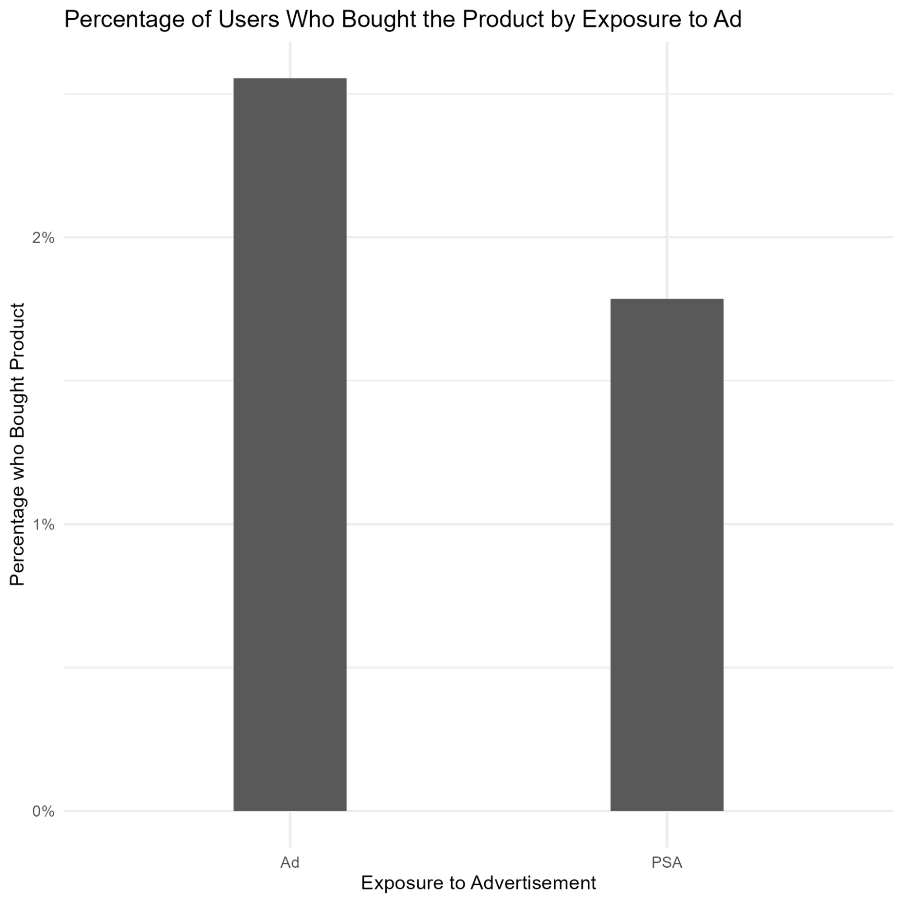

A/B Tests
As A/B testing if a key component of many modern websites and applications, I've prepared several examples that can be seen below.
Hello there, and welcome to my example of an A/B test. This A/B test will be conducted with R, and is based on a publicly available dataset which can be found here. In this scenario, a company is attempting to see whether its recent ad campaign has been effective. It has conducted an experiment by placing ads on websites for some users while other users see PSAs unrelated to the company. These two groups are then compared to see whether they’ve bought the product the company is trying to sell or not.
Before we get started, a few basic facts about the data:
- There are 588101 unique potential customers in the data set
- 96% of potential customers saw the ads, 4% did not
- Approximately 97.5% of potential customers did not buy the product; only 2.5% did
- Customers were exposed to the ads multiple times (1-2065 times) with a median of 13.
That said, let’s start the analysis!
We’ll start with the basics, evaluating whether or not mere exposure to the ads is associated with buying the product. At a visual glance, it looks like it is. 2.55% of users who saw an ad bought the product, versus only 1.78% of users who saw the PSA.
However, there’s still a few tests to do. First thing: is this difference actually statistically significant? To find out, I’ll do a chi-squared test. We’re looking, ideally, for a value here of under 0.01, indicating that the difference between the two values is extremely unlikely if the event (buying the product) is equally likely for both PSA and ad-viewers. Luckily for us, we get a value of 2X10^-13, indicating that there’s a miniscule chance the ad campaign has had no effect of the likelihood of purchasing the product.
As a next step, we’ll look at the effect size: how much effect the ad campaign had on customer behavoir. For this, we’ll use Cramer’s V, a statistical test to determine effect size. Cramer’s V can return a value between 0 and 1, with 0 meaning no effect and 1 indicating an extremely strong effect. In this case, we get a value of only 0.01- pretty small in statistical terms. However, that alone is not enough to indicate whether the ad campaign was a success. The dataset didn’t include information on how many revenue the company receives per unit, the cost of the campaign, etc.- all vital information to know.
Additionally, we know that some users saw the advertisements more than others. It may be that seeing the ad once had relatively little effect, but seeing it multiple times can strongly predict whether someone purchases the item. Most users in the dataset saw relatively few ads, but some users saw up to 2000.
| # of Ads Seen | % of Users |
|---|---|
| 1 | 9.6% |
| < 10 | 42.3% |
| < 50 | 87.9% |
| < 100 | 96.0% |
A first look at the data shows that there is most likely a connection between the number of ads seen and the probability of purchasing the products. These numbers are only for users who saw the ad, not those who saw the PSA.
| # of Ads Seen | Probability of Purchase |
|---|---|
| 1 | 0.19% |
| 2-10 | 0.40% |
| 11-50 | 1.89% |
| 51-100 | 11.6% |
| 101-500 | 17.1% |
| More than 500 | 17.5% |
As can be seen, very few users who saw the ad fewer than 50 times purchased the product. Those who saw the ad more than 50 times, however, stood a good chance of purchasing the product, although past a few hundred views, additional advertising stops greatly increasing the chances of a purchase.